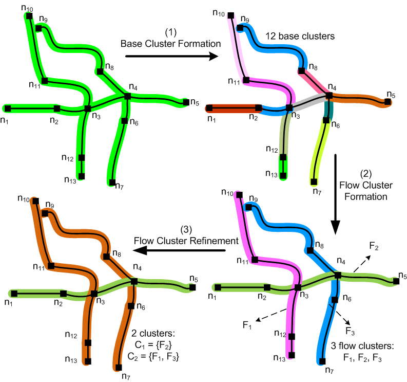

Overview
NEAT is a clustering framework including road network aware algorithms for clustering trajectories of mobile objects traveling in road networks (MO trajectories).
To deliver MO trajectory clustering results of high quality, NEAT takes into account the characteristics of both the underlying road networks and MO trajectories:
- Road network constraints: road segments, road intersections, speed limit
- Traffic stream semantics: flow, density, speed
- Road network proximity: shortest path distance
How NEAT works?
NEAT clusters MO trajectories in a comprehensive three phase road network aware framework.
- Phase 1: Base cluster formation - Partitioning each trajectory into trajectory fragments(t-fragments, then grouping t-fragments which belong to the same road segment are grouped into a base cluster.
- Phase 2: Flow cluster formation (flow based clustering) - Merging base clusters are into flow clusters considering their density and continuity.
- Phase 3: Flow cluster refinement - Exploiting opportunities to further merge flow clusters which are close in terms of road network proximity to deliver more compact and interesting results.
Fast and effective
NEAT reduces data space significantly by using trajectory fragment and base cluster as building blocks instead of points and line segments. There is no distance computation required in its first two phases. In phase 3, it uses Euclidean Lower Bound to filter out unnecessary shortest path computation. Thus NEAT runs very fast. It is 3 orders of magnitude faster than traditional density based clustering approach. See our NEAT paper for more details.
A simple example:
